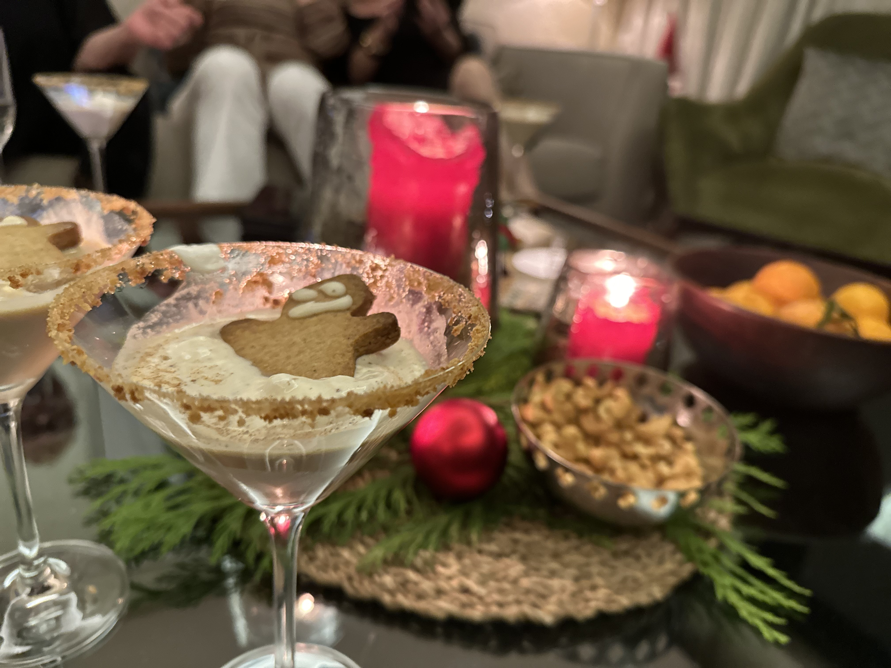

Gingerbread Martini

Somebody take that gingerbread man home
The sweet flavours of Christmas come together in this dessert-in-a-glass. No gingerbread man should operate heavy machinery after this martini.
Angela and Jason, Christmas 2023
Ingredients
For the rim
- 1-2 ginger snap cookies, crushed
- Honey or simple syrup for sticking
For the martini
- 1 1/2 oz vanilla vodka
- 1 oz Bailey's
- 1 oz Kahlua
- 1/2 oz gingerbread syrup (Recipe below)
Garnish
- Whipped cream
- Dusting of ground cinnamon, nutmeg, and ginger
- Mini gingerbread man
Steps
- To rim the glass, brush honey or simple syrup on rim, roll on crushed cookie crumbs
- To a shaker with ice, add vodka, Bailey's, Kahlua, and gingerbread syrup. Shake well.
- Strain into rimmed martini glass
- Top with whipped cream and gingerbread man. Dust with cinnamon, nutmeg and ginger
Gingerbread Simple Syrup
- 1 cup water
- 1 cup brown sugar
- 2 tsp ground ginger
- 2 tsp ground cinnamon
- 1/2 tsp ground nutmeg
- 1/2 tsp allspice
- 1 cinnamon stick
- Bring water and sugar to a simmer
- Add cinnamon stick and spices
- Simmer 5 - 10 minutes
- Remove from heat, let steep for 20 more minutes
- Strain and bottle
Gingerbread simple syrup can be kept in the refrigerator for up to 2 weeks.
Return to home page